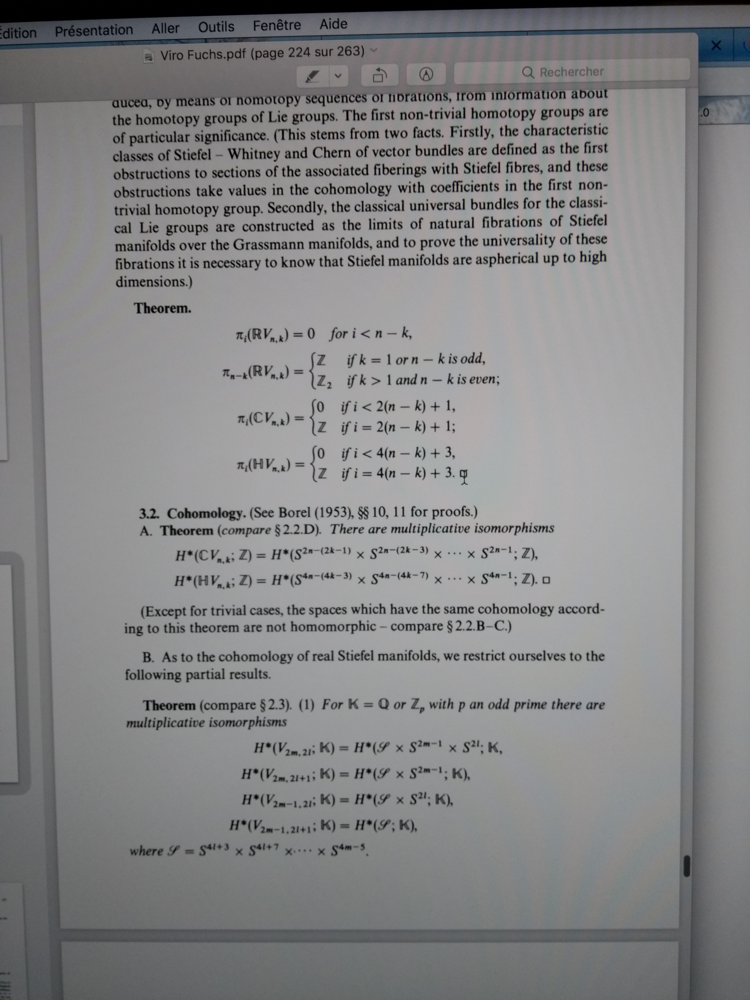

'My' notation and conventions
- Wn,k (or Wnk) is the real (compact) manifold of orthonormal k-frames in ℂn:
Wn,k:=U(n)U(n−k).
- This is homotopic to the space of k-frames (i.e. there is a homotopy retract from the latter to the former given by Gram-Schmidt 'with a global parameter), where the space of k-frames can be described by ... TODO
- We transgress ck of a rank-r bundle to H2k−1(Wrr−k+1;ℤ)
Other notations
- In [BM96] they write Wn,k to mean what we call Wn,n−k, i.e.
WBMn,k:=U(n)U(k)
but our notation agrees with Fuchs and Viro, Wikipedia (...), etc.
Special cases
| Wn,k |
k |
Notes |
| ℝ2n−1∖(0,…,0) |
1 |
this is the non-unital version of S2n−1 |
| SLn(ℂ) |
n−1 |
it is a principal homogeneous space for SLn(ℂ) (diffeomorphic to SLn(ℂ)) |
| GLn(ℂ) |
n |
it is a principal homogeneous space for GLn(ℂ) (diffeomorphic to GLn(ℂ)) |
Homology, cohomology, and dimension
- Fuchs and Viro's Topology II, Theorem III.3.2.A, page 218 (Springer)
- top degree is the sum of all the degrees, i.e. 2n−(2k−1)+…+2n−1
- TODO: specific case of Wrr−k+1